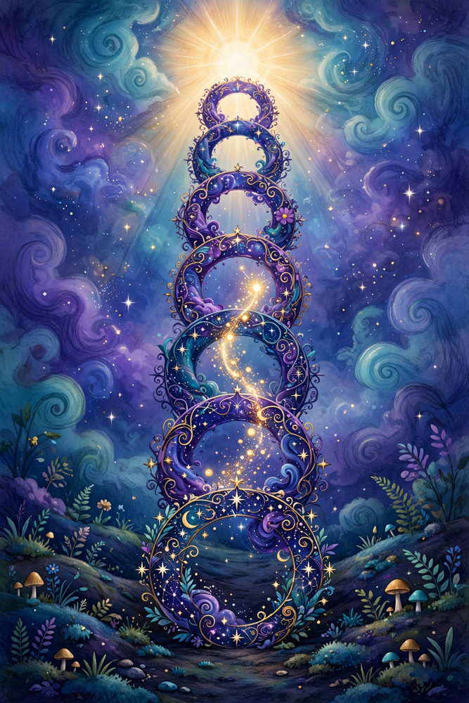

Is there free will after death? The Gnostic answer, in simple words.

Inside every person there may be a tiny spark of light from the true God above. This world is like a dark house run by gatekeepers (the Archons) who want the sparks to stay asleep. Knowing the truth — waking up — is called gnosis. Death is the trip home. And on that trip, what saves you is not mostly your choices. It is what you are and what you know.
The Gnostics said people come in three kinds. Tap one, then look at the journey below it.
Your choices are the steering wheel — above all for the Soul Person, who really can turn toward the light or away from it.
At each gate, the gatekeepers ask who you are. Choosing stops mattering — knowing is the key that opens the doors.
Not because you are forced — because the confusion is gone. At home in the Light (the Pleroma), you do not pick between light and dark. You just know, the way the sun does not choose to shine.
The place at the top of the road has a name: the Pleroma — the Fullness. And the books describe it mostly by what is missing from it. There is no night there, and no shadow, because the light is not a lamp shining on things — the light is what everything is made of. There is no time: nothing is born, nothing rots, nothing is taken away. There is no lack — the Gospel of Truth says the Fullness is the place where nothing is missing, so nobody envies, nobody grasps, nobody is afraid. Ignorance is what a hole feels like, and there are no holes.
What it has, instead: pairs of great beings called aeons, standing like a royal family around a throne — Mind and Truth, Word and Life, and their children — each one a face of the Father nobody can see directly. The Pistis Sophia and the Books of Jeu draw the upper world as a Treasury of Light: a shining country with its own gates, rivers and treasuries, a Tree of Life, and souls arriving dressed in garments of light — bodies woven out of brightness instead of flesh. And over all of it, singing: the aeons hymn the Father day without night. The simplest picture the books keep returning to is not a courtroom or a throne room. It is rest — the deep quiet of a house where everyone who was lost is finally home, and the light is just what home looks like from inside.
Free will is mostly a this-life thing, and it belongs most of all to the people in the middle. After death, the question quietly changes from “what will you choose?” to “what do you know — and what are you made of?” The spark goes home. The choosing soul is weighed by its choices and rests, or tries again. The stone returns to the earth it loved. And for the one who makes it all the way home, choosing ends — not in chains, but in daylight.